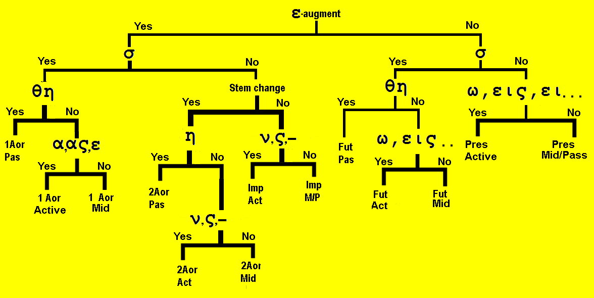

| Greek | Meaning | Notes |
|---|---|---|
| ἐβλήθην | I was thrown | Aor. Pass. of βάλλω |
| ἐγενήθην | I became | Aor. Pass. of γίνομαι |
| ἐγνώσθην | I was known | Aor. Pass. of γινώσκω |
| ἐδιδάχθην | I was taught | Aor. Pass. of διδάσκω |
| ἐκηρύχθην | I was preached | Aor. Pass. of κηρύσω |
| ἐλήμφθην | I was taken | Aor. Pass. of λαμβάνω |
| ἐπορεύθην | I went | Aor. Pass. of πορεύομαι |
| ἠκούσθην | I was heard | Aor. Pass. of ἀκούω |
| ἐλείφθην | I was left | Aor. Pass. of λείπω |
| ἀπεστάλην | I was sent | Aor. Pass. of ἀποστέλλω |
| ἐγράφην | I was written | Aor. Pass. of γράφω |
| ὤφθην | I was seen | Aor. Pass. of βλέπω |
| διώκω | I follow, pursue, persecute | |
| τρίβω | I rub | |
| νέμω | dispense, divide, assign |
First Aorist Passive
| Singular | ||
| Form | Meaning | |
|---|---|---|
| 1st | ἐλύθην | I was loosed |
| 2nd | ἐλύθης | yous were loosed |
| 3rd | ἐλύθη | he/she/it was loosed |
| Plural | ||
| Form | Meaning | |
| 1st | ἐλύθημεν | we were loosed |
| 2nd | ἐλύθητε | youp were loosed |
| 3rd | ἐλύθησαν | they were loosed |
- The first aorist passive has an ending θη immediately after the stem.
- Then the secondary endings follow: -ν, -ς, -, -μεν, -τε, -σαν
- These are the secondary ACTIVE endings, but the voice is passive, meaning the subject is acted upon.
- Although the Imperfect Active is translated using "was/were," it is followed by a verb ending with "-ing."
- For example: He was hitting a man.
- The Aorist passive is also translated using "was/were," but it is followed by a verb with a past tense (often -ed ending).
- For example: He was hit by a man.
- The word was preached.
- If the stem ends in a vowel (like λυ- in λύω), then θη is added to the stem with no change.
- If the stem ends in a consonant, then the following happens:
- ν drops out.
E.g., κρίνω becomes ε + κρι + θη + ν = ἐκρίθην - λ stays there.
E.g., ἀγγέλλω becomes η + γγελ + θη + ν = ἠγγέλθην. - ρ stays there.
E.g., αἶρω becomes η + ρ + θη + ν = ἤρθην. - μ adds an η to the stem.
E.g., νέμω becomes ε + νεμ + η + θη + ν = ἐνεμήθην. - γ is changed to χ.
ἄγω becomes ἤχθην - κ is changed to χ.
διώκω becomes ἐδιώχθην. - χ is retained.
The true stem of διδάσκω is διδαχ- thus it becomes ἐδιδάχθην. - π is changed to φ.
λείπω becomes ἐλείφθην. - β is changed to φ.
τρίβω becomes ἐτρίφθην. - τ, δ, θ are changed to σ.
πείθω becomes ἐπείσθην. - ζ, ξ, σ, ψ are changed into σ.
βαπτίζω becomes ἐβαπτίσθην. - Summary
- π, β, φ before θ = φθ
- κ, γ, χ before θ = χθ
- τ, δ, θ before θ = σθ
- ν drops out.
Second Aorist Passive
| Singular | ||
| Form | Meaning | |
|---|---|---|
| 1st | ἀπεστάλην | I was sent |
| 2nd | ἀπεστάλης | yous were sent |
| 3rd | ἀπεστάλη | he/she/it was sent |
| Plural | ||
| Form | Meaning | |
| 1st | ἀπεστάλημεν | we were sent |
| 2nd | ἀπεστάλητε | youp were sent |
| 3rd | ἀπεστάλησαν | they were sent |
- The second aorist passive is just like the first aorist passive except the θ is missing.
- See the following verbs:
- ἀναγελω becomes ἀνηγγέλην
- ἀποστέλλω becomes ἀπεστάλην
- γράφω becomes ἐγράφην
- φαίνω becomes ἐφάνην
- Some verbs like γράφω have the first aorist form in the active voice, but second aorist form in the passive voice.
- Some verbs like λείπω have second aorist form in the active voice and first aorist form in the passive voice.
Aorist Passive function
- They indicate finished action received by the subject in past time.
- Note how verbs are translated using the passive forms
- Present passive: λύομαι = I am being loosed
- Imperfect passive: ἐλυόμην = I was being loosed
- Aorist passive: έλύθην = I was loosed.
Future Passive
| Singular | ||
| Form | Meaning | |
|---|---|---|
| 1st | λυθήσομαι | I shall be loosed |
| 2nd | λυθήσῃ | yous will be loosed |
| 3rd | λυθήσεται | he/she/it will be loosed |
| Plural | ||
| Form | Meaning | |
| 1st | λυθησόμεθα | we shall be loosed |
| 2nd | λυθήσεσθε | youp will be loosed |
| 3rd | λυθήσονται | they will be loosed |
- The future passive indicative is built on the aorist passive stem
- It adds a σ to indicate future and then the primary middle/passive endings
- Thus: λυθη + σ + ομαι = λυθήσομαι
- The function of the future passive indicates action to be received by the subject in future time.
- Most of the time the action is punctiliar, but the context may reveal that it is linear (on-going) action.
- Deponent verbs vary in the aorist and future passive.
- Some deponent verbs have passive forms.
- For example: ἀποκρίνομαι in the aorist passive is ἀπεκρίθην = I answered.
- Some deponent verbs have both passive and middle forms in the aorist.
- For example γίνομαι can appear as ἐγενόμην (a middle form) or as ἐγενήθην (a passive form).
- Both forms should be translated as I became.
- There is no difference in function.
- Note the following:
| Tense | ACTIVE | MIDDLE | PASSIVE |
|---|---|---|---|
| Present | λύω = I am loosing | λύομαι = I loose myself | λύομαι = I am being loosed |
| Imperfect | ἔλυον = I was loosing | ἐλυὀμην = I was loosing myself | ἐλυόμην = I was being loosed |
| Future | λὐσω = I shall loose | λὐσομαι = I shall loose myself | λυθήσομαι = I shall be loosed |
| Aorist | ἔλυσα = I loosed | ἐλυσάμην = I loosed myself | ἐλύθην = I was loosed |

Translate the following:
- ἐδιδάχθητε ὑπὸ τῶν ἀποστόλων τοῦ κυρίου.
- ἐν ἐκείνῃ τῇ ἡμέρᾳ οἱ νεκροὶ ἐγερθήσονται ἐν τῷ λόγῳ τοῦ θεοῦ.
- ταῦτα ἐγράφα ἐν ταῖς γραφαῖς.
- οὗτοι οἱ ἁμαρτωλοὶ συνήχθησαν εἰς τὸν οἶκον τοῦ προφήτου.
- νῦν μὲν πέμπονται οἱ μαθηταί, τότε δὲ ἐπέμφθησαν καὶ οἱ ἀπόστολοι καὶ οἱ ἄγγελοι.
- διὰ τῆς ἀγάπης τοῦ χριστοῦ οἱ ἁμαρτωλοὶ ἐσώθησαν καὶ ἐγενήθησαν μαθηταὶ τοῦ κυρίου.
- ἐπορεύθημεν εἰς ἕτερον τόπον, ἐκεῖνοι γὰρ οὐκ ἐδέξαντο ἡμᾶς.
- τὸ εὐαγγέλιον ἐκηρύχθη ἐν ἐκείναις ταῖς ἡμέραις, καὶ κηρυχθήσεται καὶ νῦν.
- ἡ φωνὴ ἠκούσθη καὶ ὁ ἀπόστολος ἀπεστάλη εἰς τὸν κόσμον.
- τῶν ἁμαρτωλῶν πρῶτός εἰμι, καὶ δὲ ἐγὼ ἐσώθην τῇ ἀγάπῃ τοῦ θεοῦ.
- εἰσῆλθες εἰς τὴν ἐκκλησίαν τοῦ κυρίου καὶ ἐβαπτίσθης.
- ἐν ἐκείναις ταῖς ἡμέραις ἀκουσθήσεται ὁ λόγος τῆς εἰρήνης.